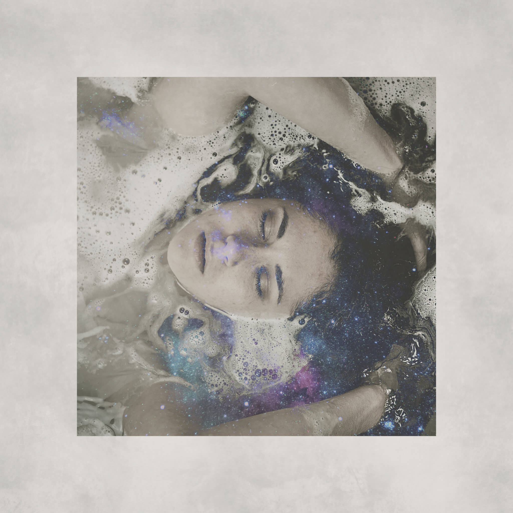

WYDEYE is a creative collective of music artists. I’ve designed album art for their songs. I also
work with the artists to develop their brand identity. When I work on Album Art for WYDEYE, I
work to realize the artist’s musical vision in a visual form.

Bring It Back
Listening to the song “Bring it Back” made me picture a woman alone with her thoughts. I captured
that experience by compositing images of the stars with a lone woman, evoking a “Goddess” feel.
I designed the album art for B.Ollie’s single “Donkey Kong”. The song is about the lifestyle and
culture of New Brunswick, so I designed a piece that reflected that.